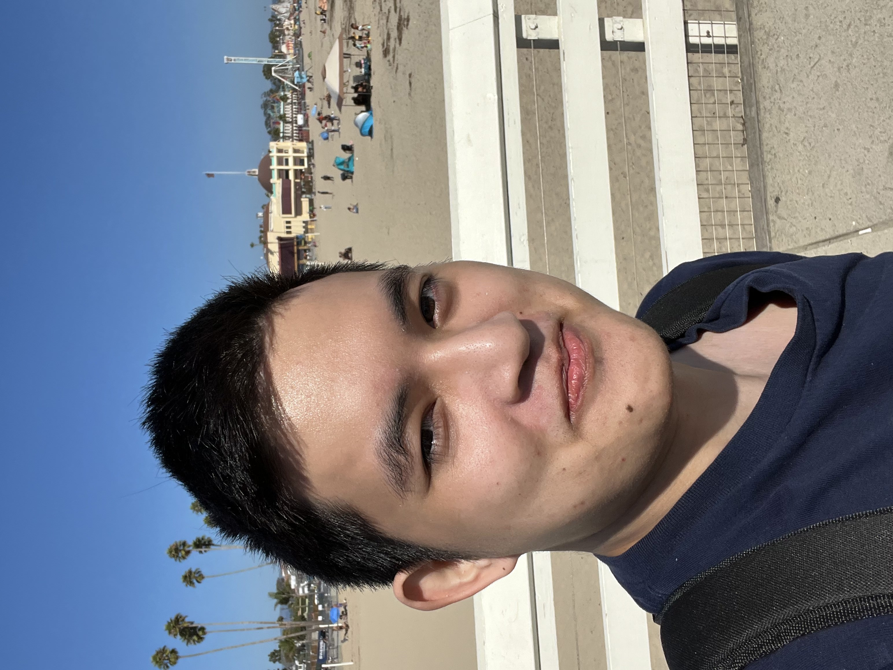

Hung Nguyen

About Me
I'm Hung Nguyen, 3rd year Computer Science: Computer Game Design undergraduate major at the University of California, Santa Cruz.
I've been coding well in python, javascript (Phaser, p5), typescript, C# for Unity, C/C++, basically anything standard I can probably work with.
- Currently focused on Phaser / Unity, learning a little bit of Unreal on the side.
- Did a couple of game jams with Phaser over the summer.
- Good experience with devving in teams, whether it be quick 48 hour jams or 10 week projects in a summer gamedev program (Gameheads).
- Big fan of Nintendo games and gacha games (sometimes both, R.I.P. Dragalia Lost).